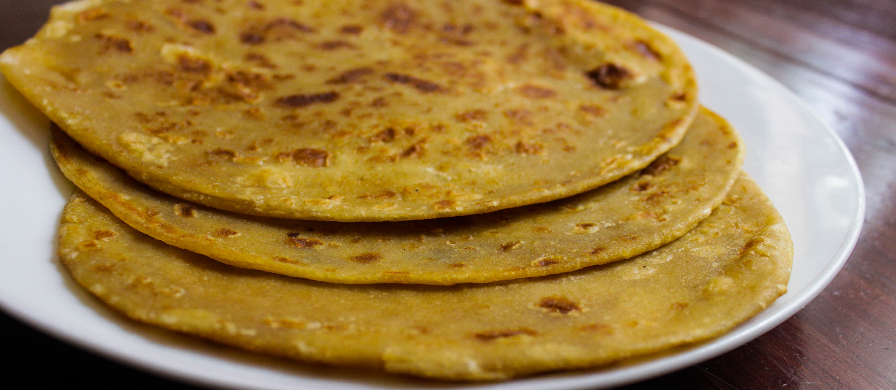

Chapati is a widely cooked dish with origins from India. Through the Arab Trade, chapati was brought to Eastern Africa. I like many Kenyans have grown up with a sweeter version of Chapati than the one available in India. The recipe below will outline the Kenyan version of chapati.